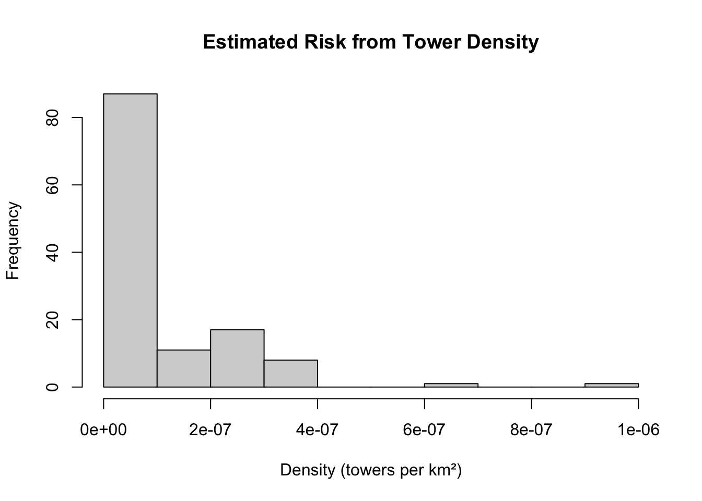
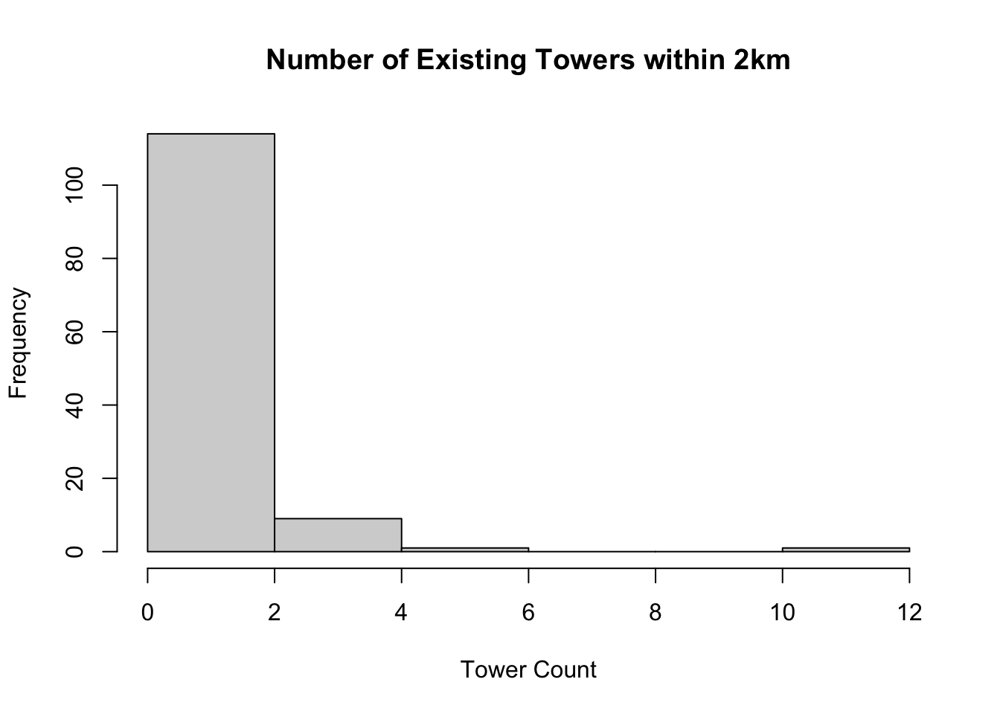
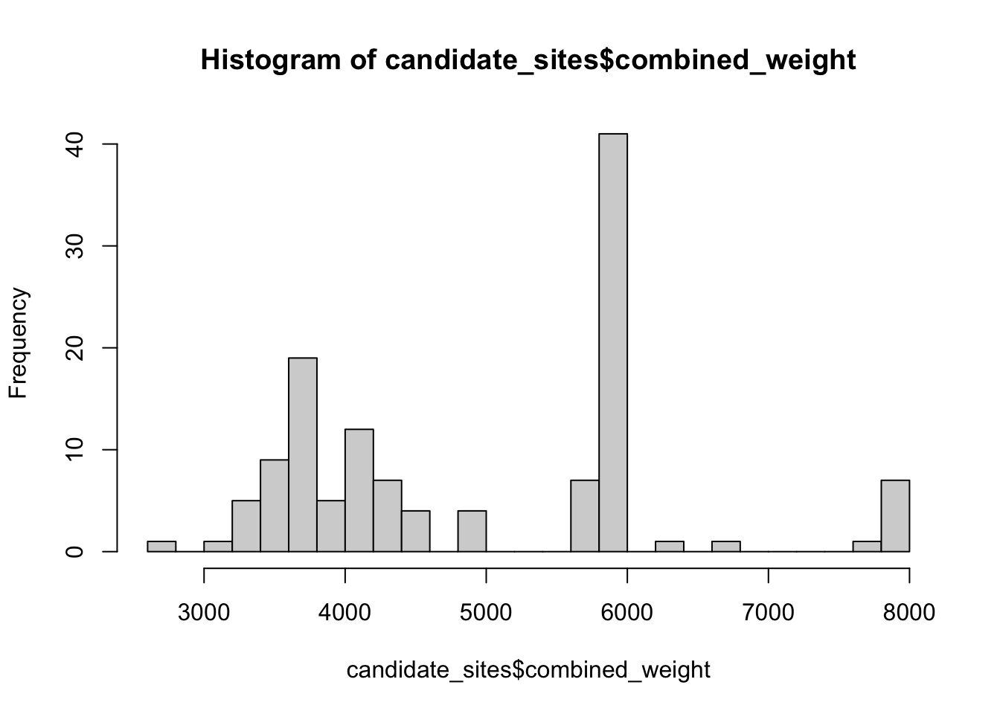

Min. 1st Qu. Median Mean 3rd Qu. Max.
0.000e+00 2.300e-13 9.177e-10 8.412e-08 1.545e-07 9.783e-07
hist(candidate_sites$estimated_risk, main ="Estimated Risk from Tower Density",xlab ="Density (towers per km²)")

# Skip density, just count towers within radius# Transform back to original CRScandidate_sites <-st_transform(candidate_sites_utm, crs =st_crs(towers))candidate_sites <- candidate_sites |>mutate(# Count towers within 2kmtowers_within_2km =lengths(st_is_within_distance( geometry, towers, dist =2000 )),# Invert: areas with NO towers = high unmet needunmet_need =max(towers_within_2km) - towers_within_2km )summary(candidate_sites$towers_within_2km)
Min. 1st Qu. Median Mean 3rd Qu. Max.
0.000 0.000 0.000 0.848 2.000 12.000
summary(candidate_sites$unmet_need)
Min. 1st Qu. Median Mean 3rd Qu. Max.
0.00 10.00 12.00 11.15 12.00 12.00
# Visualizehist(candidate_sites$towers_within_2km, main ="Number of Existing Towers within 2km",xlab ="Tower Count")

# Step 1: Calculate tower coverage and unmet needcandidate_sites <- candidate_sites |>mutate(# Count towers within 2kmtowers_within_2km =lengths(st_is_within_distance( geometry, towers, dist =2000 )),# Unmet need (invert: 0 towers = max need)unmet_need =max(towers_within_2km) - towers_within_2km )# Step 2: Join to nearest beach park rescue datanearest_beach_idx <-st_nearest_feature(candidate_sites, beach_sf)candidate_sites <- candidate_sites |>mutate(nearest_beach = beach_sf$beach_park[nearest_beach_idx],beach_rescues = beach_sf$rescues[nearest_beach_idx],dist_to_beach_data =as.numeric(st_distance( geometry, beach_sf$geometry[nearest_beach_idx],by_element =TRUE )) )# Step 3: Create combined weightcandidate_sites <- candidate_sites |>mutate(# Component 1: Coverage gap (0-1 scale)coverage_gap_scaled = unmet_need /max(unmet_need),# Component 2: Known rescue risk (where we have data)rescue_risk_scaled =if_else( dist_to_beach_data <5000, beach_rescues /max(beach_sf$rescues),0 ),# Component 3: Data uncertainty (isolated = HIGH weight)data_uncertainty =if_else( dist_to_beach_data >5000,1.0,0.0 ),# COMBINED weight (additive)combined_weight = ( coverage_gap_scaled *40+ rescue_risk_scaled *40+ data_uncertainty *20 ) *100 )# Check it workedsummary(candidate_sites$combined_weight)
Min. 1st Qu. Median Mean 3rd Qu. Max.
2696 3724 4461 4982 6000 8000
hist(candidate_sites$combined_weight, breaks =20)

library(spopt)# Optimize: Which 10 sites maximize coverage of high-need areas?result <-p_median(demand = candidate_sites,facilities = candidate_sites,n_facilities =3,weight_col ="combined_weight")# Extract selected sitesselected_towers <- result$facilities |>filter(.selected)# What sites were selected?selected_towers |>st_drop_geometry() |>select(name, towers_within_2km, unmet_need, dist_to_beach_data, beach_rescues, combined_weight) |>arrange(desc(combined_weight))
name towers_within_2km unmet_need dist_to_beach_data
1 Kawaiku'i Beach Park 0 12 5045.495
2 Ewa Beach Rd. B 0 12 16065.506
3 Pupukea Beach Park 2 10 1071.954
beach_rescues combined_weight
1 210 6000.000
2 53 6000.000
3 129 3869.159